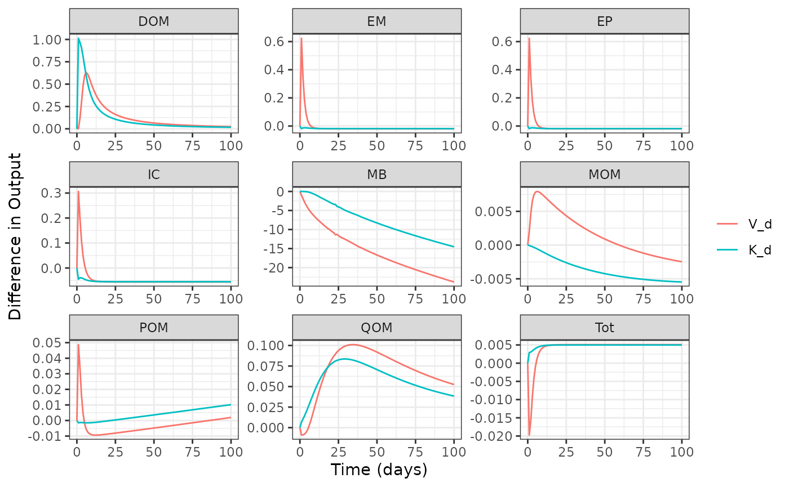
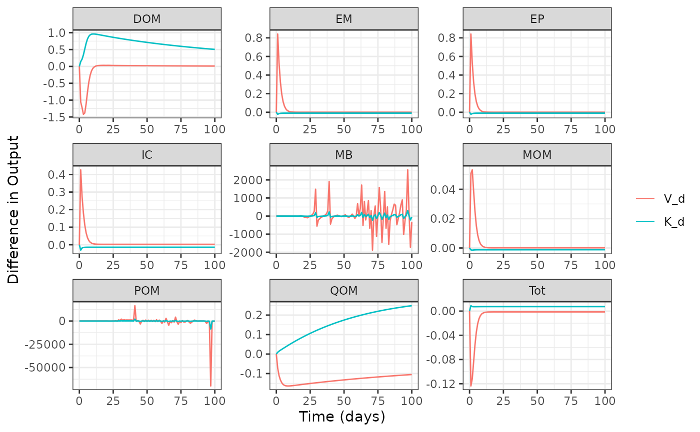
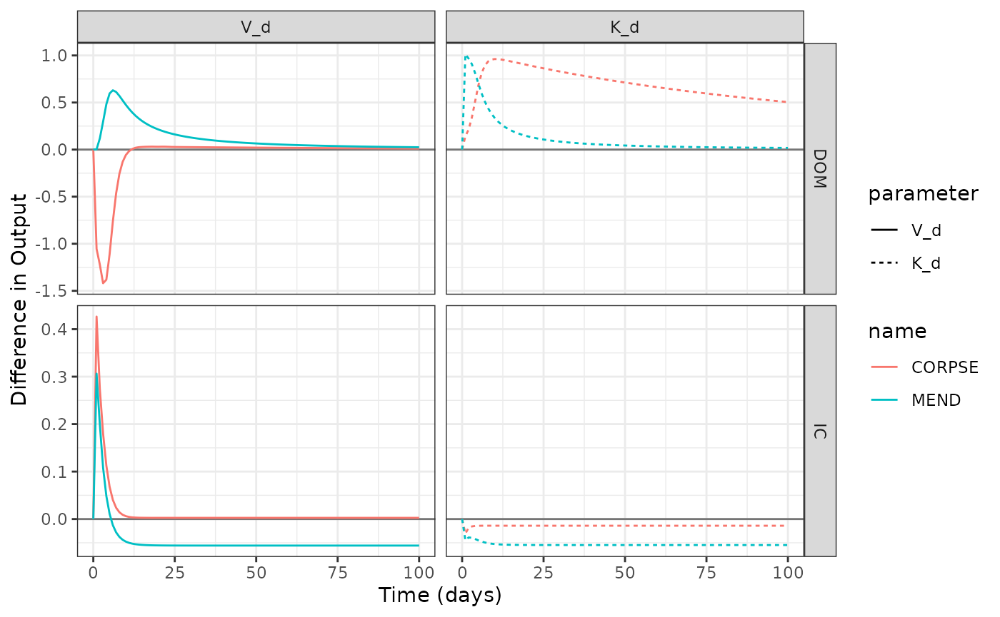

Local Senstivity Analysis
sensLocal.RmdThe objective of this example is demonstrate how to use
memc_sensfun to conduct a local sensitivity analysis and
visualize the results to demonstrate package capabilities.
The memc_sensfun function is a wrapper for
sensFun from the FME package, designed to help
memc users easily perform a local sensitivity analysis on
any memc parameter or initial condition. The official FME
provides more details, but in short, memc_sensfun runs a
memc configuration multiple times: first as a reference run, then as a
series of perturbation runs—one for each parameter of interest. During
each perturbation run, a single parameter is changed slightly while
others remain constant. The output of memc_sensfun includes
the numerical approximations of partial derivatives, representing the
sensitivity of the model output to each perturbed parameter.
Start by loading the packages used in the demonstration.
Select the memc parameters or initial conditions to
include in the local sensitivity analysis. Any of the parameters
included in memc_params or memc_initial_state
may be considered. In this example we will consider how the memc MEND
configuration is sensitive to
and
,
the maximum and half saturation rates of DOM decomposition.
Create a vector of the parameter values of interest, the ones we
would like to consider in the local sensitivity analysis and set equal
to the the parameter values used by the memc_config that
will be used to run memc_sensfun.
params_to_perturb <- c("V_d" = 3, "K_d" = 0.25)Run the local sensitivity analysis for a memc configuration. The
config may be any of the default configuraitons listed in
memc_all_configs or one created by a user via
memc_configure.
out1 <- memc_sensfun(config = MEND_config,
t = 0:100,
x = params_to_perturb)The returned data frame includes details about the simulation, such as its name, time, and pool. The value column contains the partial derivative of the simulation output with respect to the perturbed parameter, which is specified in the parameter column.
head(out1)
#> name time variable parameter value
#> <char> <num> <char> <fctr> <num>
#> 1: MEND 0 POM V_d 0.000000000
#> 2: MEND 1 POM V_d 0.048743867
#> 3: MEND 2 POM V_d 0.033570845
#> 4: MEND 3 POM V_d 0.015965606
#> 5: MEND 4 POM V_d 0.004513539
#> 6: MEND 5 POM V_d -0.001963303Quickly plot the results to compare how parameter perturbations affect model output across all pools throughout the simulation.
plot(out1)
Now let’s apply memc_sensfun to an other model
configuration so that we may compare the results.
out2 <- memc_sensfun(config = CORPSE_config,
t = 0:100,
x = params_to_perturb)
plot(out2)
Figures 1 and 2 are quite different from one another, let’s focus on the DOM and IC pools in a side by side comparison. But first recall what is different between these two configurations. By taking a look at their configuration tables. It appears that these models differ in how the represent DOM uptake and POM decomposition.
rbind(MEND_config$table,
CORPSE_config$table)
#> model DOMuptake POMdecomp MBdecay
#> 1 MEND MM MM LM
#> 2 CORPSE RMM LM LM
# Save results for the two carbon pools are we are interested in.
out1_to_compare <- out1[out1$variable %in% c("DOM", "IC"), ]
out2_to_compare <- out2[out2$variable %in% c("DOM", "IC"), ]
# Combine into a single data frame for plotting
to_plot <- rbind(out1_to_compare, out2_to_compare)
# Plot the results
ggplot(data = to_plot) +
geom_hline(yintercept = 0, alpha = 0.5) +
geom_line(aes(time, value, color = name, linetype = parameter)) +
facet_grid(variable ~ parameter, scales = "free") +
labs(y = "Difference in Output", x = "Time (days)")
The figure above demonstrate how MEND and CORPSE ROM and IC pools respond differently to parameter perturbations.